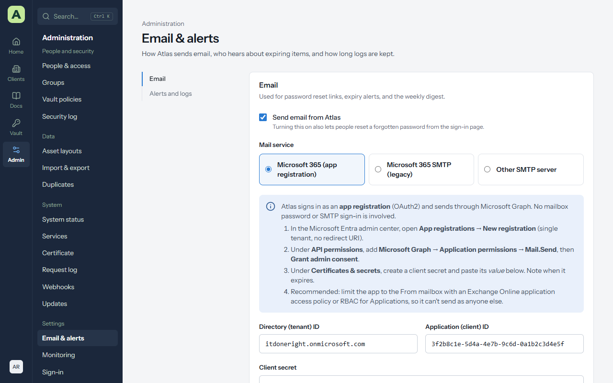
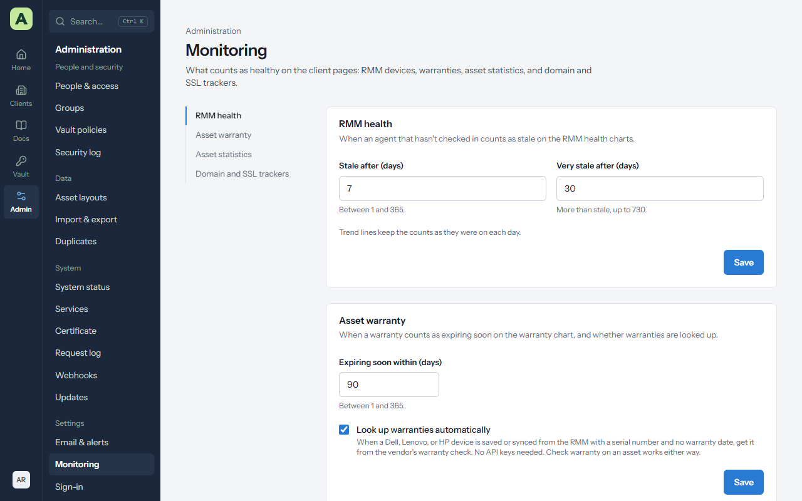
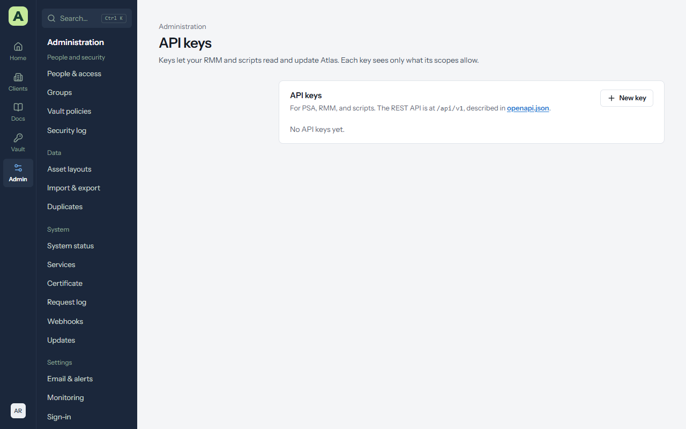
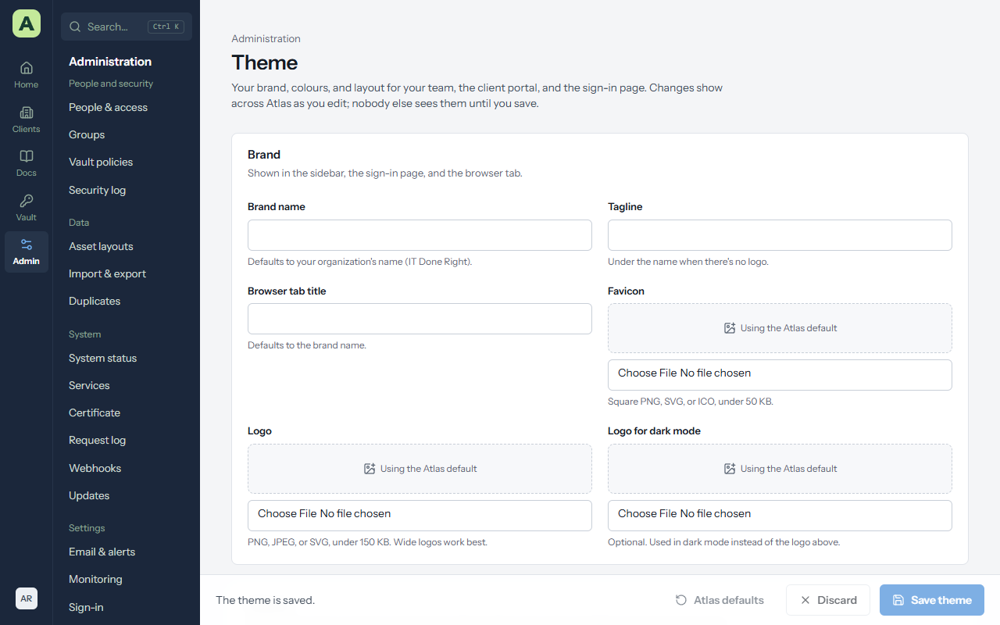
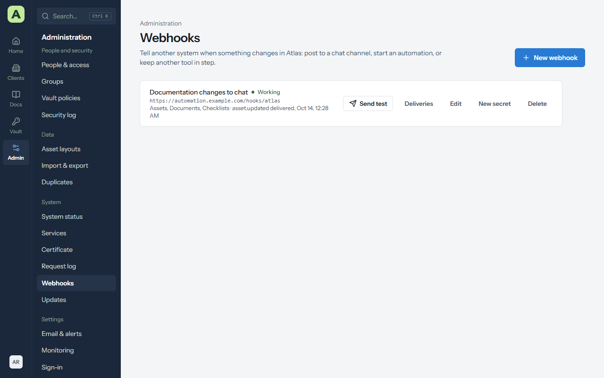

Chapter 12
Settings
Settings has its own group in the Admin menu, one page per job. Only administrators and the owner see it. Each section below explains what a setting does, why you'd change it, the exact steps, and how to check it worked.
| Page | What you set there |
|---|---|
| Email & alerts | How Atlas sends email, when expiry alerts go out, the weekly digest, and how long logs are kept. Also the way into the Alerting center. |
| Monitoring | What counts as healthy: RMM agent check-ins, warranties, asset statistics, and the domain and SSL trackers. |
| Sign-in | Microsoft Entra ID and SAML single sign-on for staff. |
| API keys | Keys for your RMM, PSA and scripts. |
| Theme | Your brand, logos, colours, layout, the sign-in page and the client portal's welcome. |
Webhooks is in the System group, and is covered at the end of this chapter.
Changes on these pages apply for everyone as soon as you save. Changes that affect security, such as email credentials or API keys, are written to the security log.
Email & alerts


Atlas sends email for:
- password reset links, so people can reset a forgotten password from the sign-in page. Without email, an administrator has to reset each one;
- expiry alerts, when something is about to run out (a password, domain, certificate, warranty, licence or anything else with a due date), and on the day itself;
- the weekly digest on Monday mornings;
- invitations, emergency access, scheduled reports and other messages people ask for.
Until email is set up, System status shows Email is not set up.
Turning email on
- Open Admin → Email & alerts.
- Tick Send email from Atlas.
- Under Mail service, choose one of the three services below, and fill in its fields.
-
Fill in From address (the address messages come from) and From name (the
name people see, by default
MSP Atlas; your company's name is usually better). - Choose Save email settings.
- Under Send a test email, enter an address (yours by default) and choose Send test. It uses the saved settings, so save first.
- Check the message arrives, and isn't in junk mail. If the send fails, Atlas shows the mail server's or Microsoft's own error.
Passwords and client secrets are encrypted with the master key as soon as you save. They're never shown again: the field says Saved and encrypted. Leave empty to keep it., and leaving it empty keeps the saved one.
Microsoft 365 (app registration), recommended
Atlas signs in to your Microsoft 365 tenant as an app, with OAuth2, and sends through Microsoft Graph. No mailbox password or SMTP sign-in is involved, and it isn't affected by Microsoft retiring basic authentication. Use it if your mail is in Microsoft 365.
You need a Microsoft Entra account that can register apps and grant admin consent (Global Administrator,
Application Administrator or Cloud Application Administrator), and a licensed or shared mailbox to send as,
such as atlas@yourmsp.com.
- In the Microsoft Entra admin center, open Identity → Applications → App registrations and choose New registration.
-
Name it, for example
MSP Atlas email. Under Supported account types, choose Accounts in this organizational directory only (single tenant). Leave Redirect URI empty. Choose Register. - On the app's Overview, copy the Application (client) ID and the Directory (tenant) ID.
- Open API permissions → Add a permission → Microsoft Graph → Application permissions, find Mail.Send, tick it and choose Add permissions. It must be an application permission: a delegated one doesn't work, because Atlas sends without anyone signed in.
- Choose Grant admin consent for your organization, and confirm. The status column must show a green tick.
- Open Certificates & secrets → Client secrets → New client secret. Give it a description and an expiry (up to 24 months), and choose Add. Copy the Value straight away: it's shown only once. (The Secret ID is not what Atlas needs.) Put a reminder in your calendar for before it expires.
- In Atlas, choose Microsoft 365 (app registration), and enter the Directory (tenant) ID, Application (client) ID and Client secret (the value).
- Enter the From address: a mailbox in that tenant. Messages are sent as, and saved in the Sent Items of, that mailbox.
- Choose Save email settings, then Check permissions. It signs in to Microsoft 365 and says whether the app has the Mail.Send application permission. Then choose Send test.
When the secret expires, sending stops and the test shows Microsoft's error. Create a new secret (step 6), paste its value into Client secret, and save.
Microsoft 365 SMTP (legacy)
Atlas signs in to smtp.office365.com on port 587 with STARTTLS, as a mailbox, with its password.
Choosing it fills in the server, port and encryption. Microsoft is retiring basic authentication for SMTP in
Exchange Online, so System status warns while it's in use. Use it only until you can set up the app
registration.
- Use a licensed mailbox, and turn on Authenticated SMTP for it in the Microsoft 365 admin center (Users → Active users → the user → Mail → Manage email apps).
- Enter the mailbox's address as Username, and its password as Password. If the mailbox has MFA, use an app password instead.
- Use the same address as the From address. Microsoft refuses mail from any other address.
Other SMTP server
For any other provider (Google Workspace, SendGrid, Mailgun, Amazon SES and so on) or an internal relay:
| Field | What to enter |
|---|---|
| SMTP server |
The provider's SMTP host name, such as smtp.gmail.com or smtp.sendgrid.net.
|
| Port |
Usually 587 for STARTTLS, 465 for TLS from the start, or 25 for
an internal relay.
|
| Encryption | STARTTLS (usually port 587), TLS from the start (usually port 465), or None (trusted internal relay only). Match what the provider says for the port. Only choose None for a relay on your own network: without encryption, the password and messages cross the network in the clear. |
| Username and Password | The account's credentials, or an API key, as the provider says. Leave both empty for a relay that doesn't need sign-in. |
| From address | An address the provider lets that account send from. Many refuse anything else. |
Your mail domain's SPF and DKIM records should allow the provider, or messages land in junk mail.
Alerts and logs
The Alerts and logs card sets when expiry emails go out and how long logs are kept. Choose Save after changing anything.
- Email an alert this many days before something is due. Tick any of 60 days, 30 days, 14 days, 7 days, 3 days and 1 day. The default is 30, 14 and 7. An alert also goes out on the due day itself. More days give more warning but more email; for things that take time to renew (domains, certificates, contracts), keep 60 or 30.
- Send a weekly digest on Monday mornings. One email listing everything overdue, or due in the coming weeks, that the person can see. On by default. Useful as a safety net for alerts that were missed.
- Keep security and password logs for 1 year, 2 years, 3 years, 7 years, or Keep forever (the default). Older security log entries and password access history are deleted automatically. Many compliance frameworks ask for at least a year.
Who gets alerts. Each alert goes to the staff who can see the item and haven't turned off
Email me about expirations on their own account page. Client accounts don't get them. Each
person gets at most one alert email a day, and one digest a week, even with several Atlas servers. Alerts and
the digest go out after 07:00 server time; ATLAS_DIGEST_HOUR changes the hour.
The alerting center. The Open alerting center link leads to custom email and Microsoft Teams templates, rules, client rules, pauses, escalation and delivery history. The alert days above drive Atlas's classic alerts. Once you choose Go live in the alerting center, its published rules send the expiry alerts instead, so nothing is sent twice; the Monday digest keeps coming either way, and Switch back to classic alerts returns to the settings above. See the alerting guide.
Monitoring


Admin → Monitoring decides what counts as healthy on the client pages and the dashboard. Each card has its own Save.
RMM health
How long an RMM agent can go without checking in before the RMM health charts count it as stale.
| Setting | Default | What it does |
|---|---|---|
| Stale after (days) | 7 | A device that hasn't checked in for this many days counts as stale (amber). Between 1 and 365. |
| Very stale after (days) | 30 | Counts as very stale (red), which usually means the device is gone or its agent is broken. Must be more than Stale after, up to 730. |
Set Stale after to a little longer than your quietest devices go offline normally, such as laptops over a two-week holiday, so the chart shows real problems.
Asset warranty
| Setting | Default | What it does |
|---|---|---|
| Expiring soon within (days) | 90 | A warranty that ends within this many days counts as expiring soon on the warranty chart. Between 1 and 365. Long enough to quote a replacement or an extension. |
| Look up warranties automatically | When a Dell, Lenovo or HP device is saved, or synced from the RMM, with a serial number and no warranty date, Atlas gets the date from the vendor's own warranty check. No API keys are needed. Check warranty on an asset works either way. |
Asset statistics
The asset statistics card counts servers, workstations and other devices. For each asset layout, choose what it counts as: Automatic (Atlas decides from the layout and the device's details), one of the kinds, or Not counted for layouts that aren't devices, such as licences.
Domain and SSL trackers
| Setting | What it does |
|---|---|
| Check on a schedule | Re-checks each domain with its registry (weekly, and daily once it expires within 60 days), and reads each website's certificate daily, so expiry dates stay current. Off, dates only change when someone chooses Check now. |
| Add SSL certificates for domains | When a domain's website serves a certificate and the client has no SSL certificate asset for it, Atlas adds one, so its expiry is tracked too. |
Alerts for domains and certificates go out on the alert days set under Email & alerts.
Sign-in
Admin → Sign-in lets staff sign in with Microsoft Entra ID or a SAML identity provider, instead of, or as well as, a password. It is described step by step in People and access.
API keys


API keys let your RMM, PSA, automations or scripts read and update Atlas through its REST API, without signing in as a person.
Creating a key
- Open Admin → API keys and choose New key. Atlas asks for your password again.
-
Enter a Name that says what will use it, such as
ConnectWise sync. You'll see it in the security log every time the key is used. -
Tick only the scopes it needs:
- Read documentation: read clients, assets, documents and the rest.
- Create and change documentation: create and update them too.
- Use the password vault: read passwords. Only tick this if the tool really needs passwords, since anyone with the key can then read them.
- Choose when it Expires: In 90 days, In 1 year (the default) or Never. Shorter is safer; a key that never expires should be stored as carefully as an administrator's password.
- Create it and copy the key. It's shown once: Atlas keeps only a hash of it, so it can't show it again. If you lose it, revoke it and make a new one.
What a key can do
- The key acts as you, with your access to clients, limited further by its scopes. If your access changes, or your account is disabled, the key changes with it.
- Keys can only reach documentation and vault endpoints, never accounts, people, settings, backups or logs.
- Every use is written to the security log under the key's name. The list shows when each was last used, and when it expires.
- Revoke stops a key working at once. Do it for keys you no longer use; System status lists keys unused for 60 days.
Using the API
The API is at /api/v1 on your Atlas, described in OpenAPI at /api/v1/openapi.json,
which most tools can import. Send the key in the Authorization header as
Bearer atlas_…. Each key can make up to 600 requests a minute. Within v1, updates only add to it,
so your scripts keep working. The other /api addresses are the web app's own and can change in
any release.
Theme


Admin → Theme makes Atlas look like your company, for your team, the client portal and the sign-in page. Changes show across Atlas as you make them, but only for you: the bar at the bottom says Unsaved changes. You see them everywhere; nobody else does yet. Choose Save theme to apply them for everyone, Discard to throw them away, or Atlas defaults to put every setting back to Atlas's own (then save).
Brand
| Setting | What it does |
|---|---|
| Brand name | Shown in the sidebar, the sign-in page and the browser tab. |
| Tagline | A short line under the name, when there's no logo. |
| Browser tab title | The text on browser tabs. Defaults to the brand name. |
| Favicon | The icon on browser tabs: a square PNG, SVG or ICO under 50 KB. Atlas for Windows uses it as its icon too, in its window, the taskbar, the tray and the Start menu, and picks up a new one within six hours or when it next starts. |
| Logo | Replaces the name in the sidebar and on the sign-in page. PNG, JPEG or SVG under 150 KB. Wide logos work best. |
| Logo for dark mode | Optional. Used in dark mode instead of the logo above, such as a white version. |
Colours
| Setting | What it does |
|---|---|
| Accent | Buttons, links and highlights. |
| Accent in dark mode | Optional. Otherwise the accent is lightened for dark mode. |
| Sidebar | The navigation panel, and the sign-in page's brand panel. |
| Sidebar in dark mode | Optional. Otherwise the sidebar colour above is used. |
Text on each colour switches between light and dark by itself to stay readable. Readability checks under the colours list each combination as Passes or Hard to read. Fix anything hard to read before saving: some people can't read low-contrast text at all.
Layout
These apply to everyone, on every screen. Each person's own menu style is separate, on their account page.
| Setting | Choices |
|---|---|
| Text size | Small, Default, Large. |
| Density | Comfortable, or Compact to fit more rows on the screen. |
| Corners | Square, Soft (default), Round. |
| Sidebar width | Narrow, Default, Wide. |
| Current page in navigation | How the page you're on is marked: Filled highlight, Accent bar or Coloured text. |
| Animations | Dialogs and notifications slide in. People who ask their system for less motion never see it. |
Sign-in page
The brand panel beside the sign-in form, on wider screens.
- Headline, which replaces “A clearer picture. For every client.”
- Text under it, such as who to call for help.
- Background image: JPEG, PNG or WebP under 400 KB. It's darkened with the sidebar colour so the text stays readable.
Client portal
Welcome message is shown to client contacts at the top of their dashboard, up to 500 characters. Use it to say what's there and how to reach your help desk.
Webhooks


Admin → Webhooks makes Atlas post a short message to an address of yours whenever something changes, so a chat channel, an automation (Power Automate, Zapier, n8n) or another tool can react.
Adding a webhook
- Choose New webhook.
-
Give it a name, and the
https://address to post to. It must be HTTPS, and redirects aren't followed. - Tick the kinds of item it should hear about: clients, assets, documents, passwords, contacts, locations, checklists.
- Save, and copy the signing secret. It's shown once. The receiver uses it to check a message really came from Atlas.
- Choose Send test to post a
ping, and check the receiver got it.
What a message holds
A message names the event (such as asset.updated or password.rotated), when it
happened, who did it, the client, and the item's type, name and address in Atlas. It never carries the item's
contents, and a password message gives only the entry's name. A receiver that needs more uses the API with a
key.
The signature, headers and message format are in the administrator guide.
Delivery
- A message is queued together with the change it describes, so it isn't lost if the receiver is down.
- Anything other than a 2xx answer within 10 seconds is a failure. It's tried again after 1 minute, 5 minutes, 30 minutes, 2 hours and 6 hours, with the same id each time, so the receiver can ignore repeats.
- After ten messages in a row have been given up on, the webhook is paused. Fix the receiver and choose Resume.
- Deliveries shows the latest 50 and why any failed.